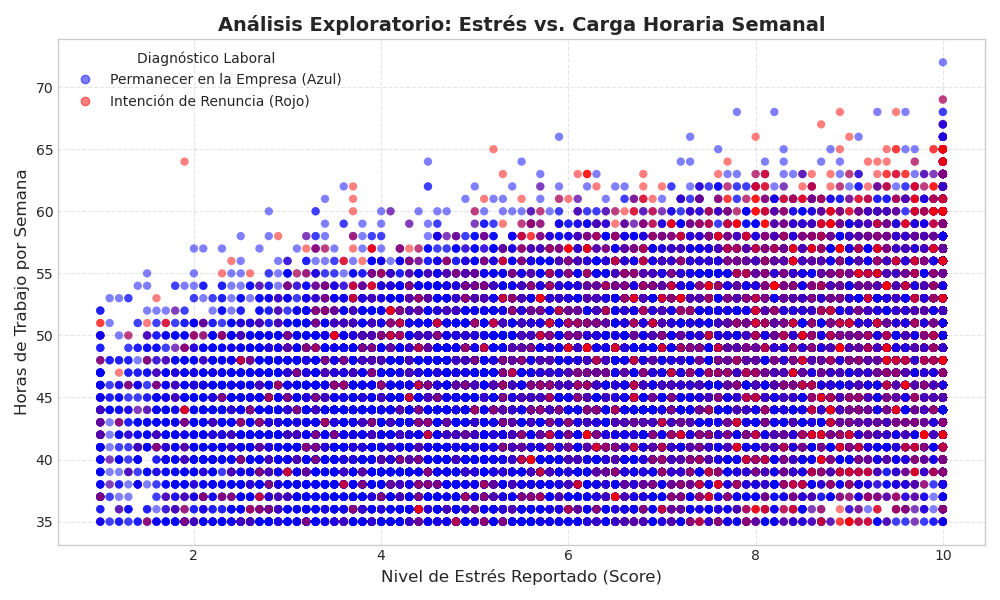
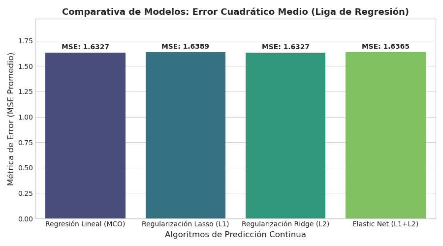
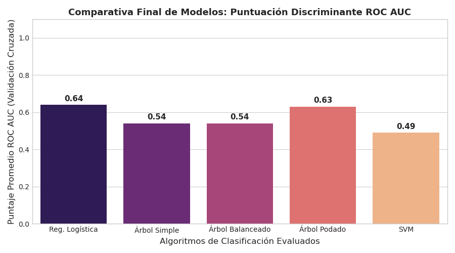
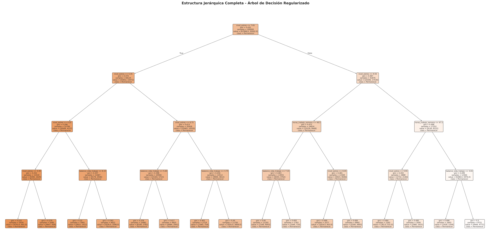

Modelado Predictivo y Clasificación Avanzada del Agotamiento Laboral
Aplicación de Machine Learning en el Sector Tecnológico
Universidad César Vallejo
Escuela Profesional de Ingeniería de Sistemas
Realidad Problemática
¿Por qué usar Machine Learning en Recursos Humanos?
- ✗ Gestión Reactiva: La industria espera a que el ingeniero renuncie, perdiendo talento clave.
- ✓ La Solución (Predictiva): Procesamiento de 100,000 registros para construir sistemas de alerta temprana.
El Reto Analítico
Separación metodológica estricta para evitar errores estadísticos:
- 1 Regresión: Estima la cantidad continua de cansancio (MSE).
- 2 Clasificación: Dictamina la decisión binaria de renuncia (ROC AUC).
Análisis Exploratorio (EDA)
Interacción visual y complejidad de los datos
Comportamiento Multifactorial
- • El problema de la deserción no responde a un solo factor lineal.
- • Existe una interacción cruzada entre el Nivel de Estrés y las Horas de Trabajo.
- • Este comportamiento entrelazado y ruidoso justifica matemáticamente el uso de algoritmos complejos de Machine Learning frente a fórmulas tradicionales.

[Imagen no encontrada]Coloca 01_dispersion_estres_horas.png en la carpeta img/
Liga de Regresión (Predictiva)
Predicción Continua del Nivel de Burnout (Métrica: MSE)

[Imagen no encontrada]Coloca 02_comparativa_mse_regresion.png en la carpeta img/
El modelo clásico prevalece
- • Métrica: A menor Error Cuadrático Medio, mejor modelo.
- • Resultados Reales: Regresión Lineal Clásica (MCO) y Ridge empatan con el error mínimo absoluto de 1.6327.
- • Hallazgo: Al no existir multicolinealidad destructiva en los datos, penalizaciones agresivas como Lasso (1.6389) introdujeron un sesgo artificial perjudicial.
Liga de Clasificación
Detección Categórica de Renuncia (0 = Permanece, 1 = Renuncia)
Robustez ante datos humanos
- • Métrica: Puntería ROC AUC (A mayor barra, mejor discriminación).
- • Los Ganadores: La Regresión Logística (0.64) y el Árbol Podado (0.63).
- • Hallazgo: Modelos ultra complejos como SVM (0.49) cayeron al nivel del azar por sobreajuste. Las fronteras más simples lograron generalizar mejor el caos humano.

[Imagen no encontrada]Coloca 04_comparativa_roc_auc.png en la carpeta img/
Extracción de Reglas Lógicas
Inspección de la "Caja Negra" del Árbol de Decisión

[Imagen no encontrada]Coloca 03_estructura_arbol_completo.svg/b> en la carpeta img/
Conclusiones Finales
1 Validación Científica
En datos reales no siempre gana el algoritmo más complejo. La Regresión Lineal y la Logística demostraron ser mucho más estables y robustas que modelos pesados como Lasso o SVM.
2 Reglas Tangibles de Negocio
Se descubrió matemáticamente que el riesgo organizacional se dispara al cruzar el umbral de 7.65 en estrés combinado con 48.5 horas laborales.
Impacto Tecnológico (Ing. de Sistemas)
Este modelo se traduce en código y software:
- ✓ Despliegue del algoritmo en el ERP corporativo.
- ✓ Evaluación en tiempo real del capital técnico.
- ✓ Alertas automáticas para proactividad gerencial.